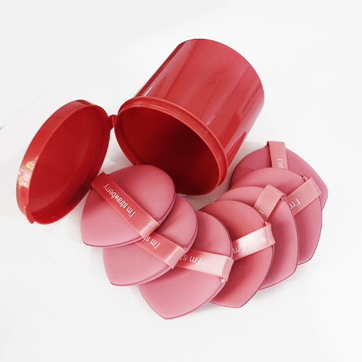

พัฟ
จุดเด่น:ช่วยให้การลงแป้งและรองพื้นเรียบเนียน ติดทน และรวดเร็วขึ้น
อ่อนโยน:มีเนื้อสัมผัสที่นุ่ม เด้ง และแน่น ช่วยให้การลงเมคอัพเป็นไปอย่างนุ่มนวล
การเก็บรักษา:ล้างทำความสะอาดอย่างน้อยสัปดาห์ละครั้งด้วยสบู่อ่อนหรือน้ำยาเฉพาะ ผึ่งให้แห้งสนิทในที่อากาศถ่ายเทสะดวก ไม่เก็บในกล่องปิดทึบหรือในห้องน้ำที่ชื้นแฉะ และควรเปลี่ยนพัฟใหม่ทุก 3-6 เดือน
ราคา:10บาท
ข้อมูลสำหรับผู้แพ้ผลิตภัณฑ:ล้างหน้าด้วยน้ำสะอาด